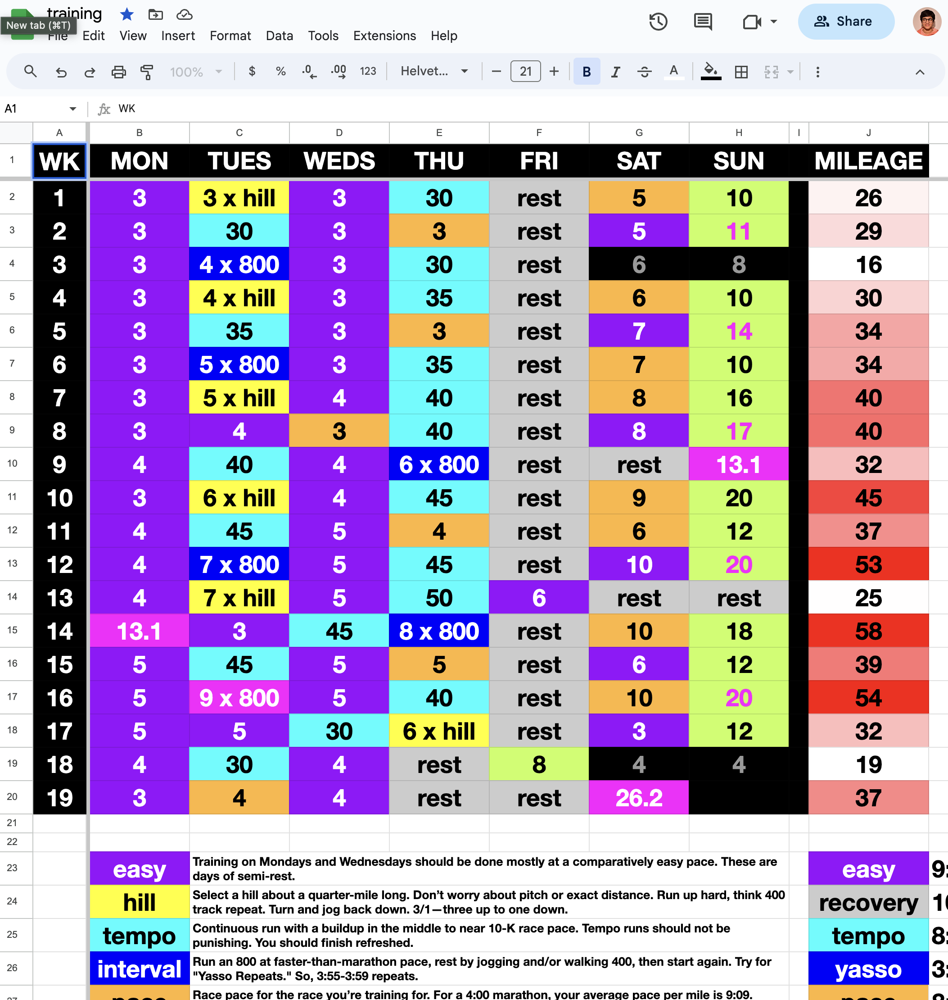
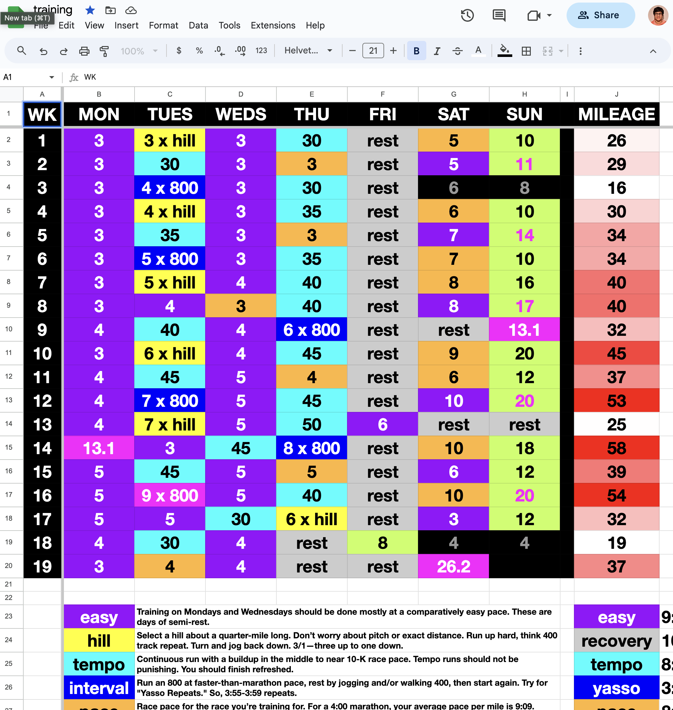
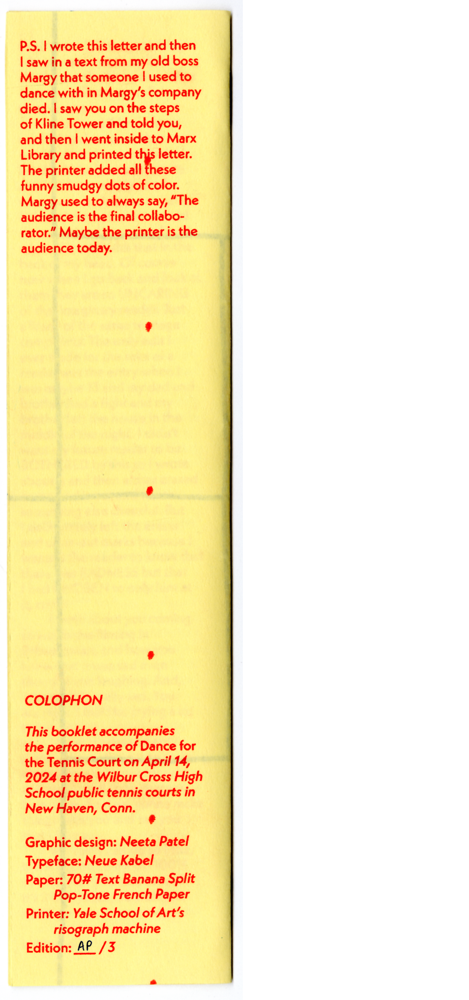
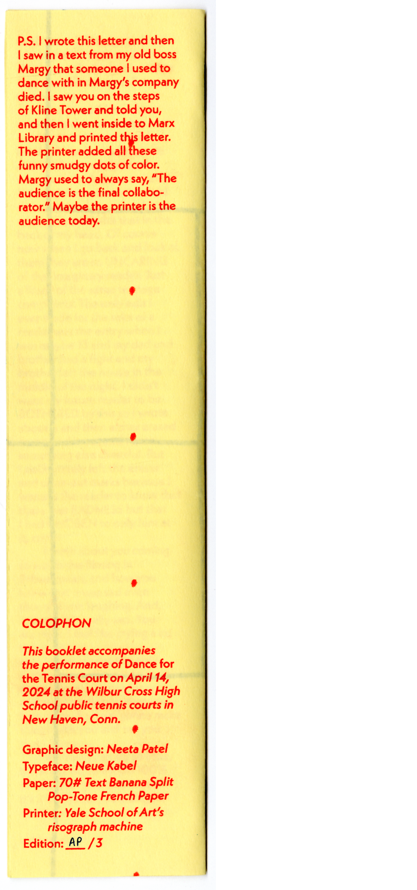

I am a graphic designer and a long-distance runner. I’ve been designing for nine years and running for twelve. It is impossible for me to make sense of my design practice without speaking about my simultaneous conditioning as a marathoner.
Setting type and stepping feet share a certain relentless, repetitive performance of labor over time. One foot in front of the next is how I move forward in space; constant iteration is implicit in how I design.
With both of my practices, I like going places. In running, I physically go places every morning with my legs; in design, I allow my work to take me places, too. The output of my self-initiated experiments and production informs my decisions about where to take my making next.
While the destination of a run is an important navigational tool, both of my practices are more concerned with the “going.” What I mean by this: process is everything. I train to cross finish lines and meet deadlines; yet, the meaning of running and of designing is made in the hundreds of miles run and in the countless explorations created preceding the main event. Moreover, I aim for that process to inform what an object looks like. When I circulate something into the world, I like when the viewer can learn some kernel of its history through its handling.
I use time as a material to measure and mark work performed. Like the stencil-based printing processes of risograph and silkscreen that I often employ, time is a sieve through which I push ritual acts of making to observe change and express how duration feels, whether on the printed page or in a web browser. I use spreadsheets and scripts to track, instruct, and reflect. As a printer, I am a planner. I employ repetitive, calibrated processes to achieve both a certain level of craft and a state of near-meditation.
Distance running and graphic design share an illusion of isolation and control. I primarily run alone, in the early mornings. In the afternoons, I am in my studio, alone. But, the list of people who are waiting at the finish line to catch me when I fall, and the list of collaborators I am connected to in my work, are long: friends, family, clients, commissioners, printers, producers, and even the discipline’s tools. In design, learning how to come to terms with this loss of control and power, how to approach that situation with grace and humility and an open mind and gratitude—that, too, is how I run.
Meaning is made when I take my work for a long run, when I allow myself the space and time to stumble into ideas and people that then shape the trajectory of a work and of my life. The afterlife and the reception of a work is important to its life cycle, too; like the midday afterparty following a race, in which I rest and eat at home with my loved ones, a work’s circulation contains moments of celebration and relief and discovery and sharing. This is why I design.
 

My graphic design practice is a compulsive endurance sport.


 
